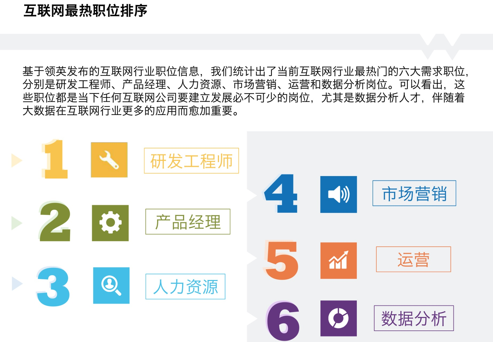
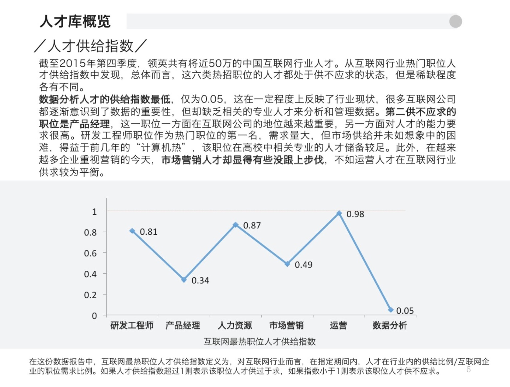
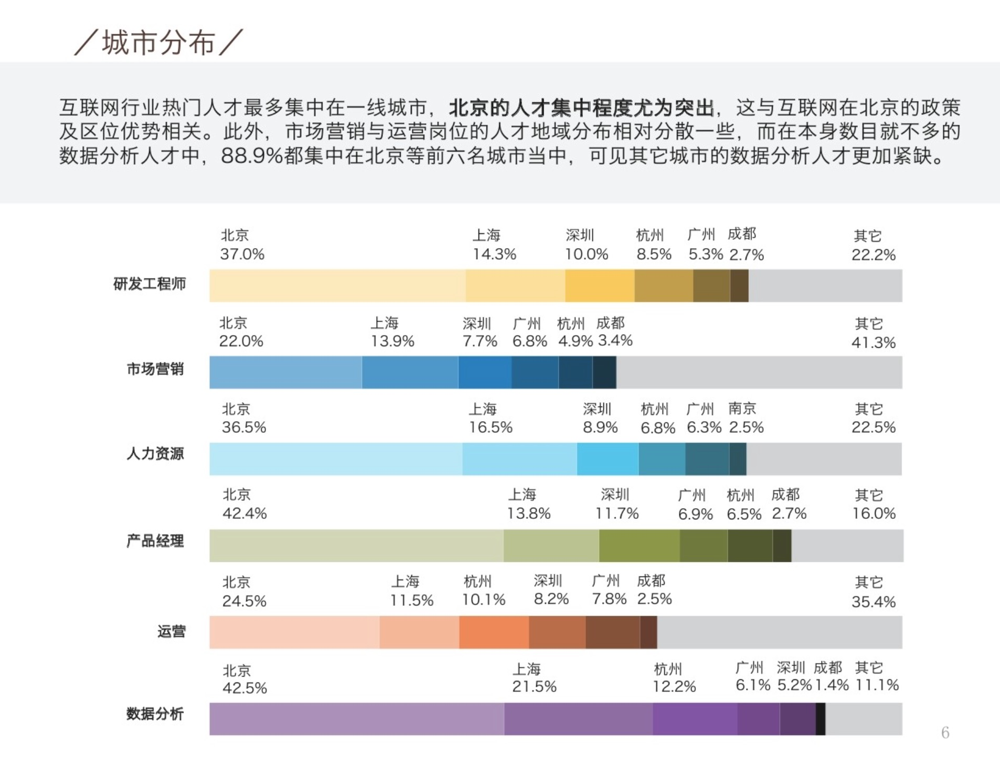
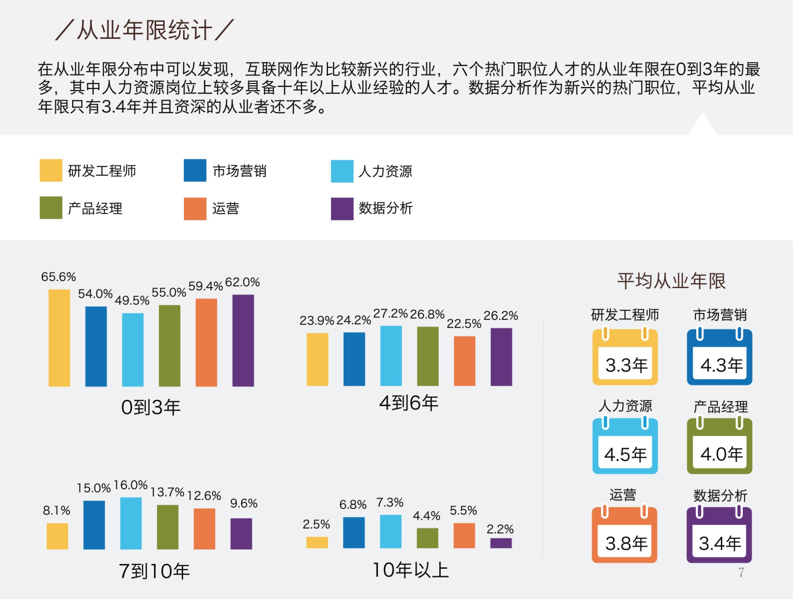

《Linkedln：2016年中国互联网最热职位人才库报告》
互联网最热职位排序：

人才供给指数：

城市分布：

从业年限统计：

课程简介：
近两年来，数据分析师的岗位需求非常大，90%的岗位技能需要掌握Python作为数据分析工具。Python语言的易学性、快速开发，拥有丰富强大的扩展库和成熟的框架等特性很好地满足了数据分析师的职业技能要求。
本课程以代码驱动的方式讲解如何利用Python完成数据获取、处理、数据分析及可视化方面常用的数据分析方法与技巧
技能掌握：
- 熟悉数据分析的流程，包括数据采集、处理、可视化等
- 掌握Python语言作为数据分析工具
- 掌握非结构化数据的处理与分析
- 掌握数据分析中常用的建模知识